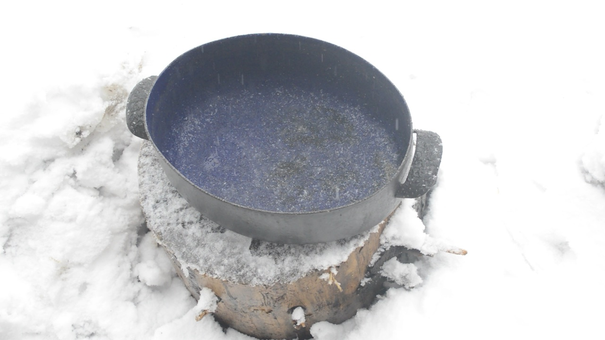
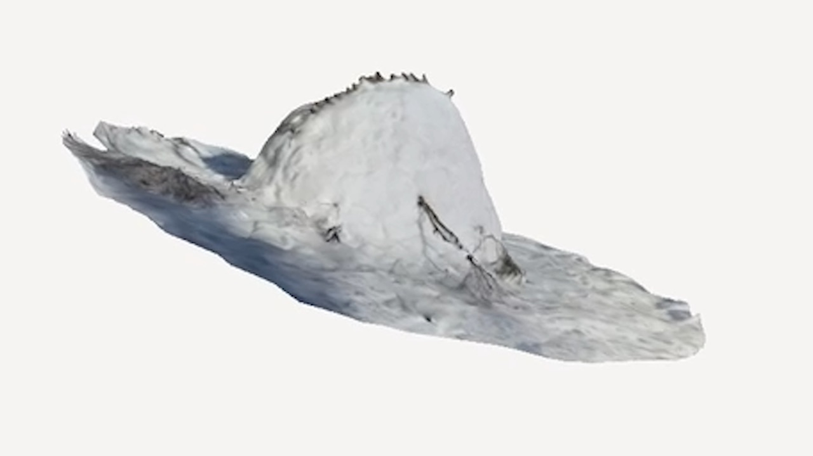
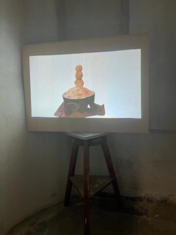

Konzervování každodennosti
Archiv 3D skenovaných momentů jednoho domu, prezentovaný ve formě jednotlivých osmisekundových videí. Jeden z výstupů mé diplomové práce na Pedagogické fakultě UK.
Kliknutím na klip pustíte zvuk.
Archiv 3D skenovaných momentů jednoho domu, prezentovaný ve formě jednotlivých osmisekundových videí. Jeden z výstupů mé diplomové práce na Pedagogické fakultě UK.
Kliknutím na klip pustíte zvuk.


Toto video je vedlejším efektem / další částí původního videa se sněhulákem – Trofej taje.
Zde můžete vidět 3D skeny staveb sněhuláků naskenované různými lidmi z různých zemí prostřednictvím aplikace Polycam. Takových sněhuláků je jistě velké množství, ale tady máme jen výběr těch veřejně sdílených se světem + mého vlastního, který vychází z mého předchozího videa The Trophy Is Melting. Obraz je doplněn zvukem zaznamenaným z reportáže České televize z roku 2011 o 3D skenování.
Už je to pár let, ale princip je pořád stejný. Nyní jsme schopni jednoduše skenovat objekty pomocí našich telefonů. A lidé míří svými telefony na své pokoje, osobní věci a architekturu.
Může nám 3D sken pomoci zachovat svět tak, jak ho známe? Bude archeologie v budoucnu probíhat prostřednictvím virtuálních 3D sbírek? Dokážeme přesunout své životy do virtuálního prostoru se všemi našimi milovanými hmotnými věcmi?
Technologie se používá k vytvoření zálohy skenovaného objektu nebo osoby. Je to pohyb z fyzického do virtuálního světa. Změna stavu. Změna skupenství.

Když si myslíme, že je něco krásné, vážíme si toho. Sbíráme. Vystavujeme. Záleží nám na tom. Chráníme. Nenapadlo by nás to zničit. Má tedy na ochranu nárok jen to, co si myslíme, že je krásné? A co se stane, když zničíme i to?
Točeno na telefon skrz dalekohled.